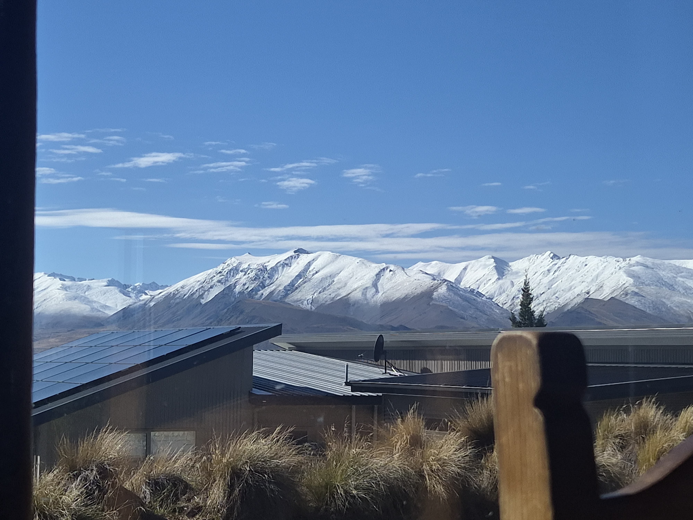
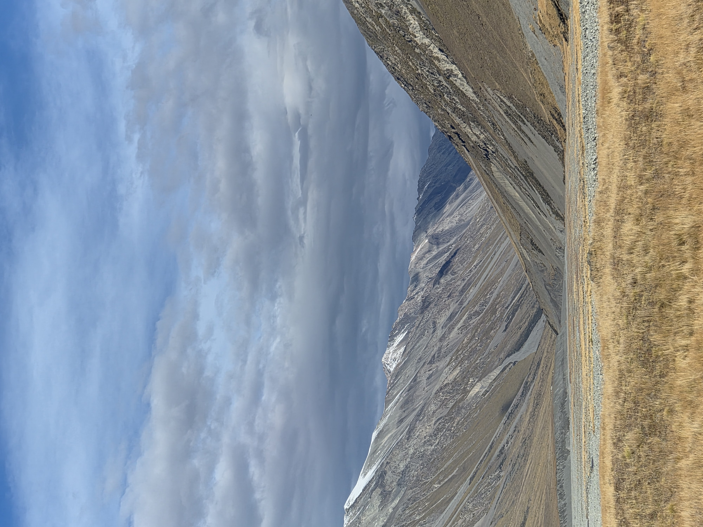
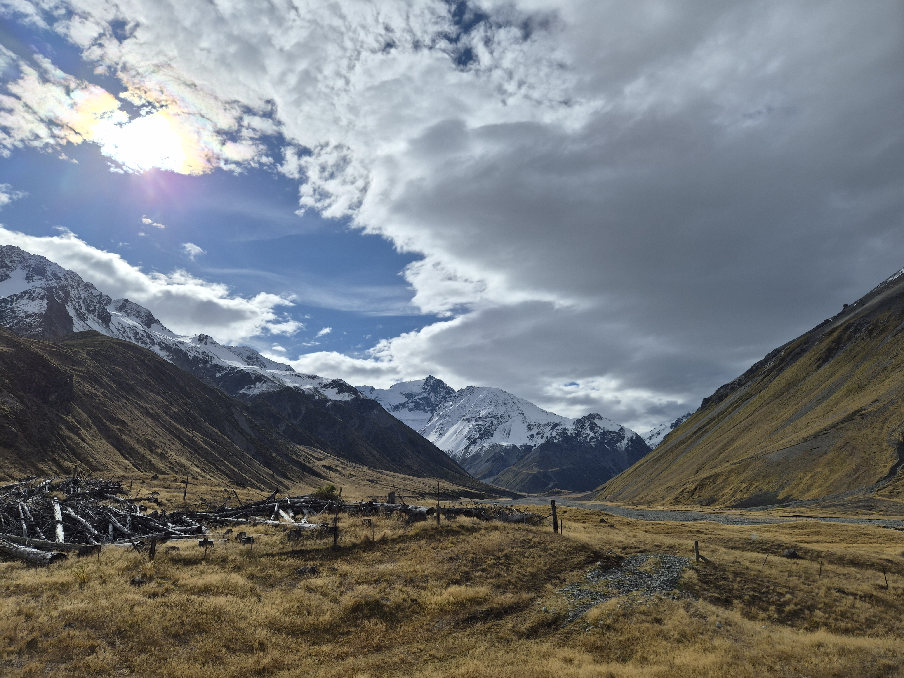
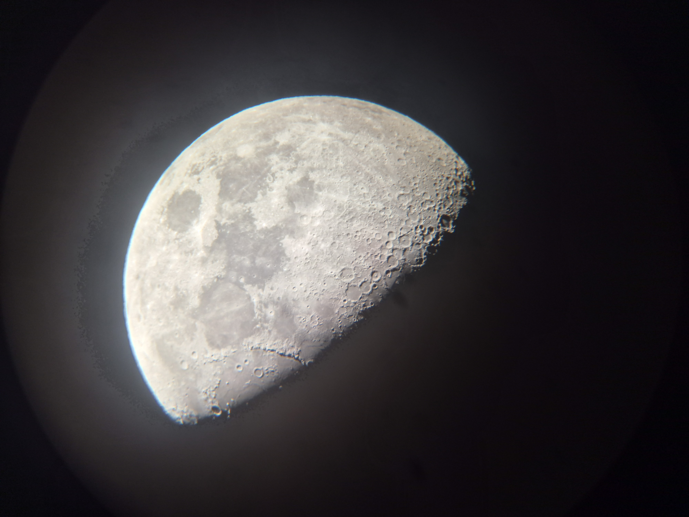
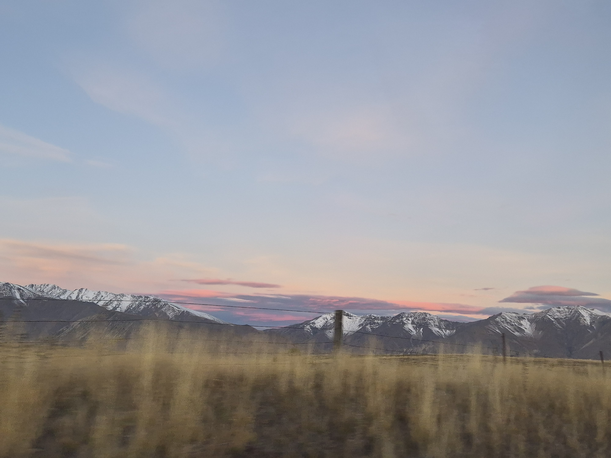
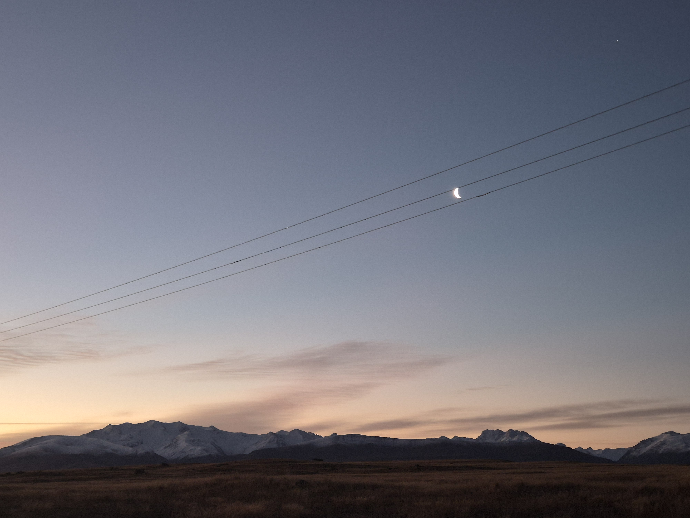
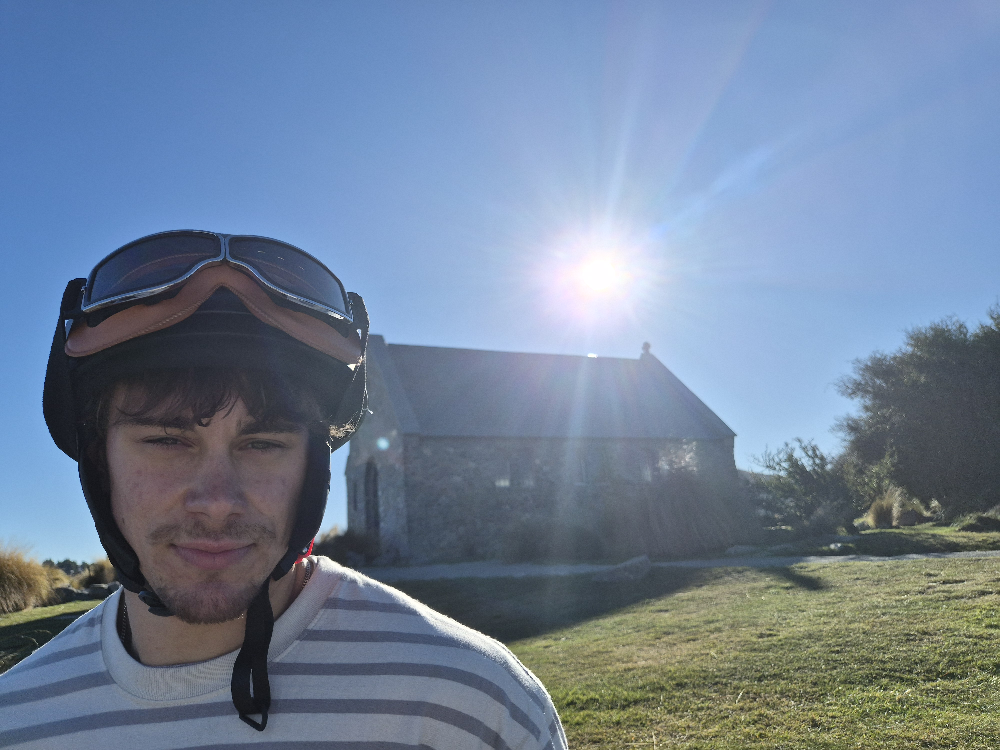
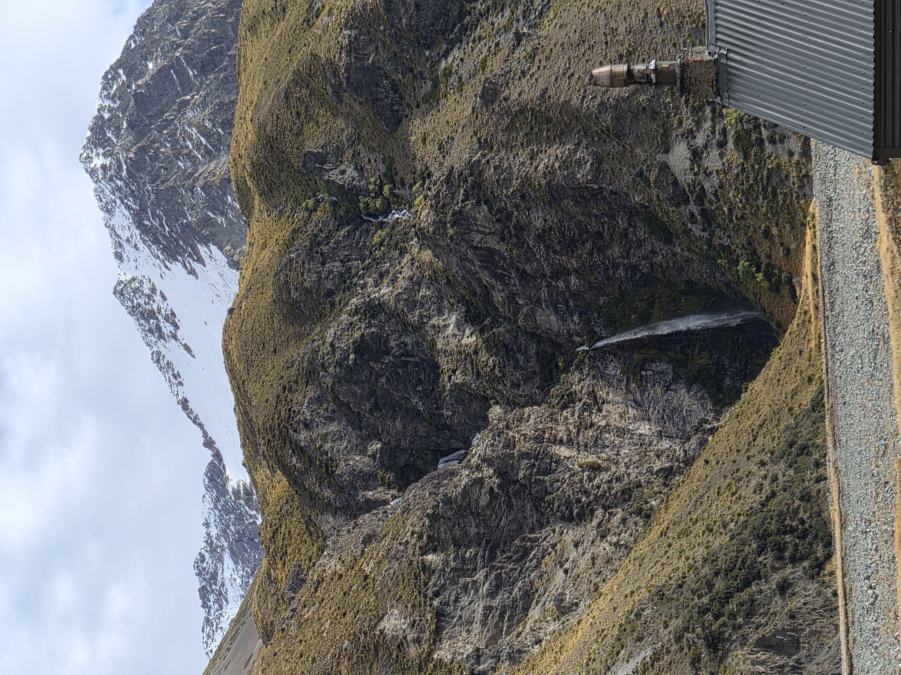

Got some snow on the mountains for the last weeks in Tekapo, which was very lovely as it reminded me of when I first got there. Unfortunately I got sick whilst the weather was good and had to stay indoors and look at the mountains from my window.



The moon came out for our last few stargazing nights - which was annoying but I did manage to get a good photo of the moon through the telescope.

On our last weekend one of our friends offered to take us out to the other end of the lake via 4WD. It was a long day but it was super fun, we went along the Cass Valley and stopped to look at the 4 huts along the way, having a BBQ at the last hut. It is a good job I am no longer vegetarian as I don't have to worry about bringing my own veggie stuff. The end of the valley was really beautiful, and the sun was quite low in the sky so everything was slightly golden. The 4WD was fun as we got to drive through a few small rivers, but it was very bumpy and we did sometimes have to get out to open gates as we were on private land.
On one of the last days in Tekapo, me and Jacob were recruited to be models for one of the company's new buisiness ventures. We just got to ride around on these electric bikes all day whilst followed by a drone taking pictures. The bikes apparently could go about 60kmph but I couldn't manage to get mine to go that fast. Was a nice end to our time there, and I'm excited to see the video hopefuly when it comes out! Had to get a picture by the iconic church.
Overall I have loved my time in Lake Tekapo, it is a truly beautiful place, and I'm glad I've been able to document a few of my favourite photos and memories on here. Mostly I will miss the lovely people I got to meet here, luckily they are all big travel fans so hopefully it won't be too long before I see them again.



